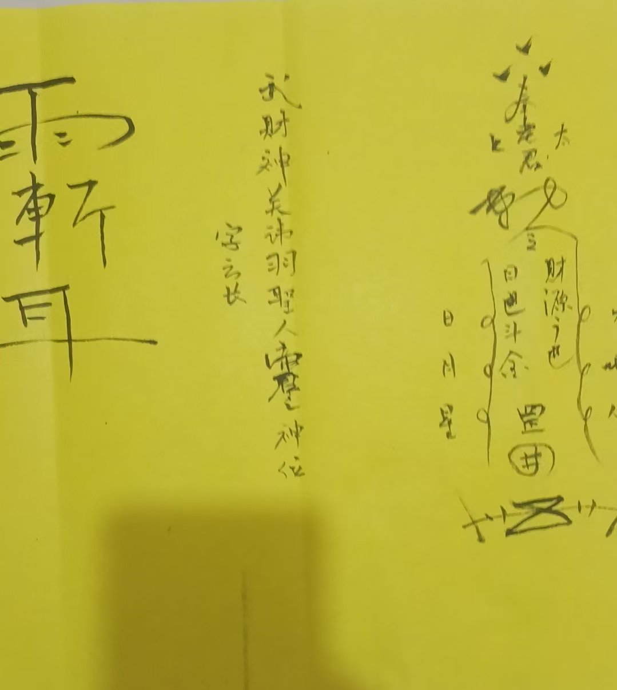

20260522祝由术符字 要供奉的
符咒术法 原始对话记录
这是要供奉的
要写关圣帝君，那就要供奉酒肉
要写珈蓝菩萨，就供水供花
以下为编者整理的主题文章
编者整理 · 主题文章
写关帝供酒肉，写珈蓝供花
导读：这一页只有两行字和一张图。说的是祝由的符字要供奉：写关圣帝君，就得供酒肉；写珈蓝菩萨，就供水供花。事归谁管，写谁；供品也跟着对号入座。图和别处的记录对着看，这条规矩其实和开光、祭祖那边是一套的。
这一页的两行字，短得像便条。
这是要供奉的。 要写关圣帝君，那就要供奉酒肉。要写珈蓝菩萨，就供水供花。
就这样。上面那张图，是一幅符字。
我拿它和别处的记录对着看。祝由那篇说，符字大多是神明的代码，写的时候，心里观想神明放光。写谁，就是请谁办事。供品自然要跟着人走——关帝面前摆酒肉，珈蓝面前摆水和花。
这套规矩不止祝由有。开光那边也是：开光之前要摆水果、酒水，点三支香，先念一句"初到香坛前，焚香祝圣贤"。祭祖那边，送的东西也分门别类：房子、衣服、酒食、元宝、香火，一样是一样。
所以这张便条看着简单，其实是同一副骨架子上的一个关节。请哪一位，办哪一件事，供哪一样东西。写谁，就供谁。
我把那两行抄在纸角上。后面空着，留给我自己填。
说明与免责：本站为民间修炼、民俗文化与传统文化资料的整理与记录，内容源自传承者口传与个人修习体会，仅供文化交流与研究参考，不构成医疗、健康、投资或任何功效承诺。所述内容属传统术数范畴，请理性看待；如身体不适，请及时就医。请遵守法律法规与公序良俗。